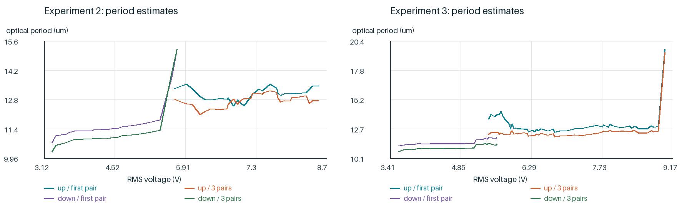
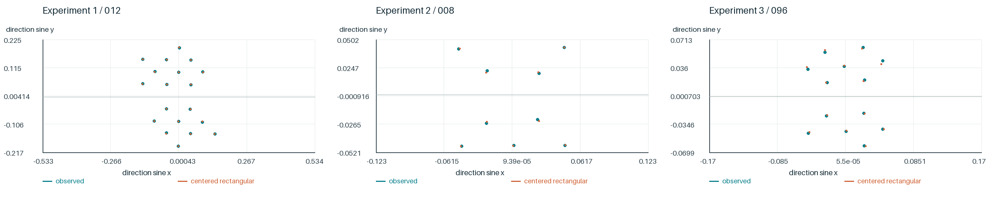
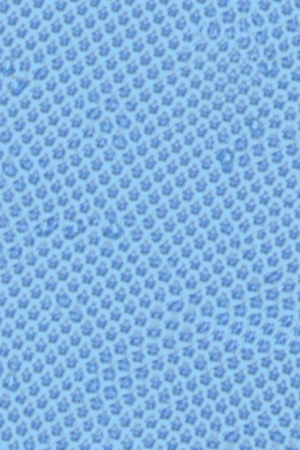
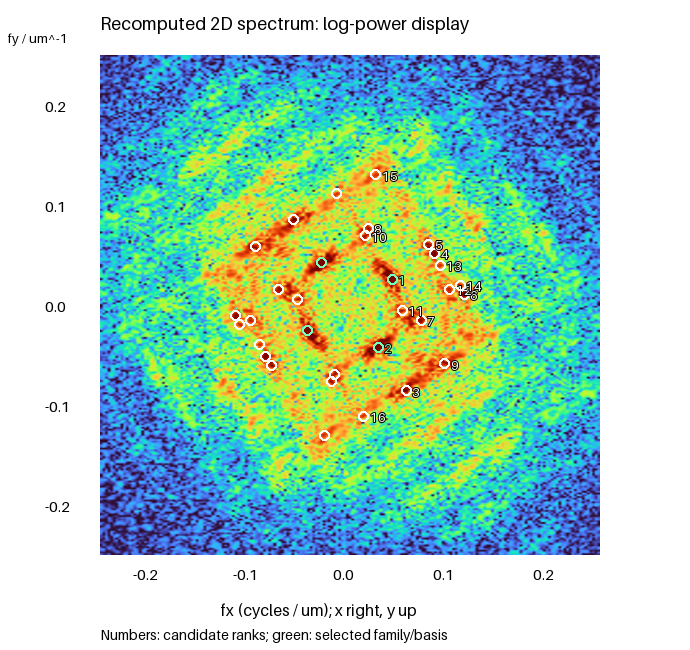
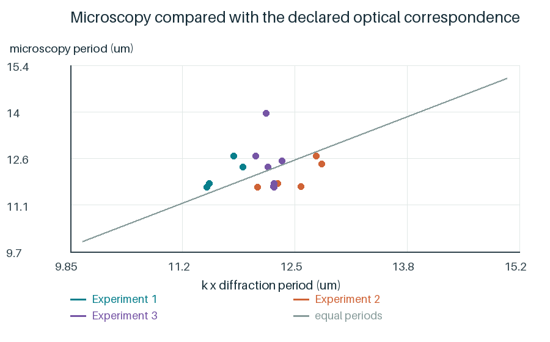

衍射峰距与显微纹理是否对应？
光屏毫米坐标先换算成衍射角，再结合波长632.8 nm计算光学周期。实验2、3使用前三对峰共同估计，减少单个首峰偏移的影响；盒屏距采用独立确认的30 cm。


去除缓慢变化的背景、加Hann窗，再计算二维傅里叶频谱。频率向量给出纹理法向，其长度的倒数给出周期。


不能总把最亮频谱峰当作基峰：196帧右区最强峰约6.16 µm，而支持的频率族基峰约12.29 µm。164帧中区虽有全局双峰，四分块却没有共同支持两种模态。

| 实验 | 配对衍射帧 | 偏差中位数 |
|---|---|---|
| 实验1 | 4 | +3.0% |
| 实验2 | 5 | -3.3% |
| 实验3 | 7 | +0.9% |
唯一符合筛选条件的二维近电压配对中，显微平均周期为19.91 µm，衍射周期为20.15 µm，相差-1.2%。
本节重算31条既定匹配的汇总：先在同一历史衍射帧内合并ROI，再按帧统计。二维近电压配对只对应一个显微时刻。工具演示、模型数据和分时显微匹配各有来源，并非同一批照片连续生成。
| 模型 | 帧数 | 条件留一误差/半步中位数 |
|---|---|---|
| 方格 | 28 | 0.211416 |
| 中心矩形 | 28 | 0.0904058 |
| 一般仿射 | 28 | 0.07153 |
该检查以既定候选和整数标签为条件，不是盲识别精度。显微静态样本重算了裁剪与分块；时间邻帧像素未随包提供，未重做时间检验。
逐帧模型比较 · 一维周期 · 配对和汇总细节周期说明重复得多密，却不能单独决定各峰的亮度。下一步用相位光栅模型解释光强配比。
双击Mac或Windows启动器，在研究界面选择本节的案例，再点击分步计算或计算整个案例。
命令行参数：
--cli research --chapter periods --out work/periods_01
每次写入新目录。下方数据记录说明了本节实际重算范围。